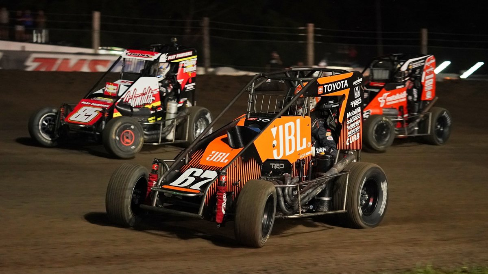

This week: Jacob Denney leads USAC National Midgets into Plaza Park and Merced
The Golden State Invasion resumes with three USAC National Midget races in four nights, the Australian Sprintcar Championship runs at Toowoomba, and USCS tries again with the Flip Flop 50 at Riverside.

The schedule for Sunday, November 15 through Saturday, November 21, as published by the series and tracks. Check each track for start times, ticketing and weather before you go.
Midgets and USAC
The USAC NOS Energy Drink National Midget championship resumes this week after both nights of the Hangtown 100 at Placerville Speedway were canceled because of forecast storms. That leaves five races in the Golden State Invasion, and three of them are this week. Jacob Denney leads the standings with 1,130 points. Kevin Thomas Jr. is second with 1,057, 73 points back. Justin Grant is third with 1,006, Gavin Miller fourth with 970 and Jakeb Boxell fifth with 968. USAC’s standings were last updated after the September 26 4-Crown Nationals at Eldora Speedway. Each feature this week pays 70 points to the winner. Source: USAC.
Wednesday, November 18, Plaza Park Raceway, Visalia, California (rescheduled for Monday, Nov. 23). The original Wednesday date was postponed because of saturated grounds and more rain in the forecast, and USAC has rescheduled the race for Monday, Nov. 23, according to USAC Media, Nov. 17; read the update. The Good Earth Farms Special presented by Peelz is the series’ first race at the 1/5-mile track. The 40-lap feature pays $5,000 to win, and A-Class Micros are also on the card. Pits open at 3:30 p.m. Pacific, the front gate opens at 5 p.m., the drivers meeting is at 5:15 p.m. and hot laps begin at 6 p.m., followed by qualifying and racing, according to USAC.
Friday and Saturday, November 20–21, Merced Speedway, Merced, California. The second annual Chase Johnson Classic has grown to two nights of USAC National Midget racing on the 1/4-mile track, with $5,000 to win each night. The Ultimate Sprint Car Series races Friday only, and 360 winged sprint cars race Saturday only. Pits open at 2 p.m. PT, grandstands at 4 p.m. and hot laps at 5 p.m. both days. The event streams on FloRacing. Source: USAC event information; Merced Speedway.
Denney led most of last year’s inaugural Chase Johnson Classic from the pole, but Logan Seavey passed him on the outside with two laps left in the 30-lap feature to win. It was Seavey’s first USAC National Midget win in 533 days. Source: USAC.
Looking ahead: the 12th Jason Leffler Memorial on November 24 at Bakersfield Speedway at Kevin Harvick’s Kern Raceway, and the 85th Turkey Night Grand Prix on November 28 at Ventura Raceway close the season. Source: USAC.
Wing sprint cars
The World of Outlaws, High Limit Racing, All Star Circuit of Champions, ASCS National Tour and POWRi 410 seasons are complete.
Friday and Saturday, November 20–21, Riverside International Speedway, West Memphis, Arkansas. The ACE DORAN 18th Annual Bobby Martin Memorial USCS Flip Flop 50 for the USCS Outlaw Thunder Tour has been postponed again, this time from November 13–14 because of low temperatures in the forecast. USCS said the event will serve as the season finale for both the Outlaw Thunder Tour and Riverside. USCS had already canceled its 30th anniversary finale at Talladega Short Track. Friday is heat races and the Engler Machine & Tool Pole Scramble. Saturday is Last Chance Qualifying and two 25-lap A-mains, each paying $2,500 to win. The second A-main starts inverted, so the winner of the first starts 22nd. A driver who wins both collects a $2,500 bonus, for a possible $7,500. Derek Hagar of Marion, Arkansas, is the only driver to win both, in 2024. Start times have changed as the event was postponed; check USCS or Riverside International Speedway before you go. Sources: USCS releases via TJSlideways.com; USCS / MyRacePass.
Friday and Saturday, November 20–21, Central Arizona Raceway, Casa Grande, Arizona. The track lists the 360 Wing Desert Series and 360 winged sprint cars on both nights, sharing the card with the USAC Southwest Sprint Cars. Pits open at 2 p.m., gates at 4 p.m. and racing starts at 6 p.m. local time. The event is listed on SPEED SPORT TV. Source: Central Arizona Raceway.
Non-wing sprint cars
Friday and Saturday, November 20–21, Central Arizona Raceway, Casa Grande, Arizona. The USAC Avanti Windows & Doors Southwest Sprint Car Series (360 non-wing) has two more dates at Central Arizona. R.J. Johnson leads with 1,039 points in standings last updated after October 24. Dayton Shelton is second with 831, Koen Crawford third with 811 and Daylin Perreira fourth with 808. USAC had not posted results from the November 14 race at the same track as of Sunday morning. Sources: USAC; Central Arizona Raceway.
The USAC AMSOIL National Sprint Car and USAC Silver Crown seasons are complete. Kyle Cummins won the national sprint car title. Source: USAC.
Australia and New Zealand
Wednesday, November 18 and Friday–Saturday, November 20–21, Hi-Tec Oils Toowoomba Speedway, Charlton, Queensland. The 64th Nutrend Homes Australian Sprintcar Championship is at Toowoomba for the first time in 50 years, according to the track. Jock Goodyer is the reigning Australian champion. The prelude is Wednesday, Night 1 is Friday and Night 2 is Saturday, with Sunday, November 22 as the rain date. The track’s official ticketing sheet lists Thursday, November 19 as “No Event (no practice or Calcutta).” Clay-Per-View is streaming the three nights on a separate superpass. Because of the time difference, the Friday and Saturday night programs in Queensland take place Friday and Saturday morning in the United States. Read our full preview. Sources: Toowoomba Speedway ticketing information; Clay-Per-View.
Saturday, November 21, Nowra Speedway, Nowra, New South Wales. Speedcars and wingless sprints top the card, with street stockers and Fast 4s. Racing starts at 5 p.m. local time. Source: Nowra Speedway.
Saturday, November 21, Auckland City Speedway (Waikaraka), Auckland, New Zealand. The track’s schedule lists the North Island Sprintcar Championship, with midgets, TQs, F2s and quarter midgets also on the program. Racing starts at 5 p.m. local time, with a November 22 rain date at 4 p.m. Sprintcars United lists the meeting as a race night. Sources: Waikaraka Park Speedway; Sprintcars United.
Baypark Speedway’s next meeting is November 28, headlined by the South Pacific Super Saloon Championship with sprint cars on the card. The Maddington Toyota Sprintcar Series in Western Australia resumes December 5 with the John Day Classic at Perth Motorplex. Sources: Baypark Speedway; Speedway Illustrated News.